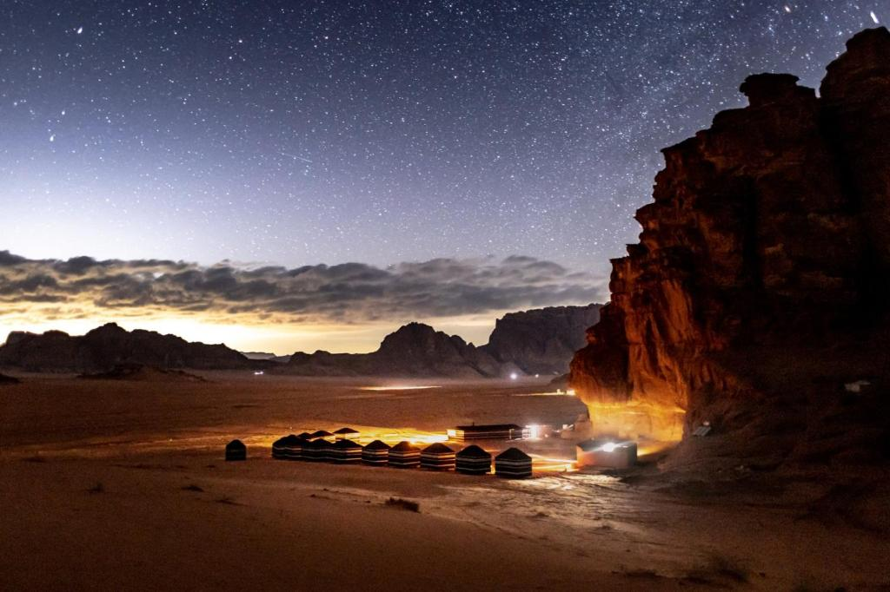

Lets know more about Wadi Rum

Wadi Rum is a valley cut into the sandstone and granite rock in southern Jordan,
near the border with Saudi Arabia and about 60 km (37 mi) to the east of the city of Aqaba.
With an area of 720 km2
10 Best Things to Do in Wadi Rum
- Take a 4×4 tour through the desert
- Try sandboarding on giant dunes
- Spend a night in a desert camp
- Watch the sunset or sunrise
- Enjoy a traditional Bedouin dinner
- Go stargazing
- Go hiking in Wadi Rum
- Say hello to Wadi Rum camels
- Go on a hot air balloon ride
- Try rock climbing in Wadi Rum
If you want to read more, you can visit wikipedia.
Discover Other Places